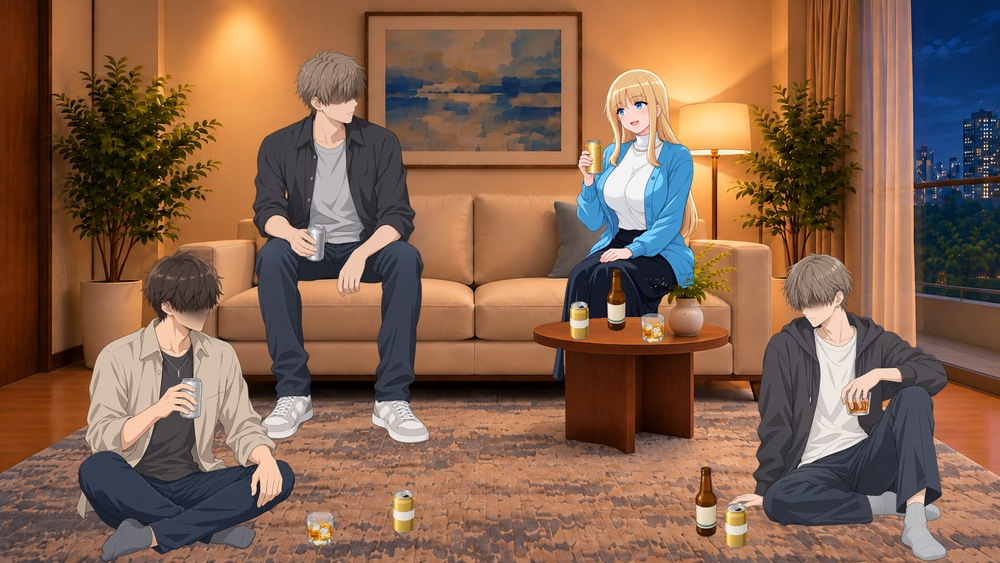
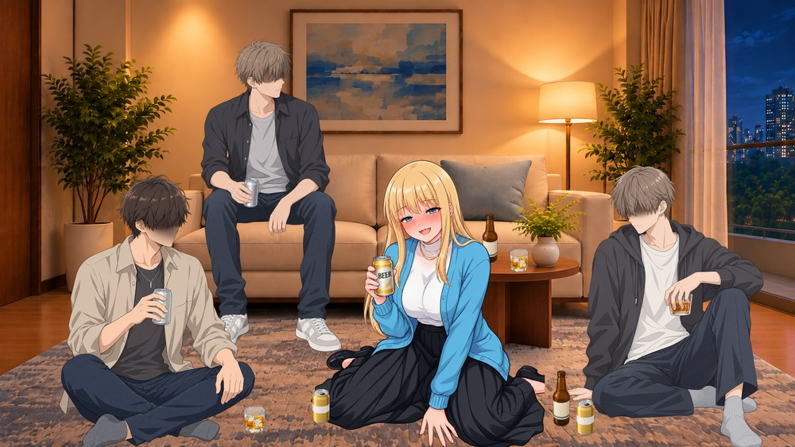
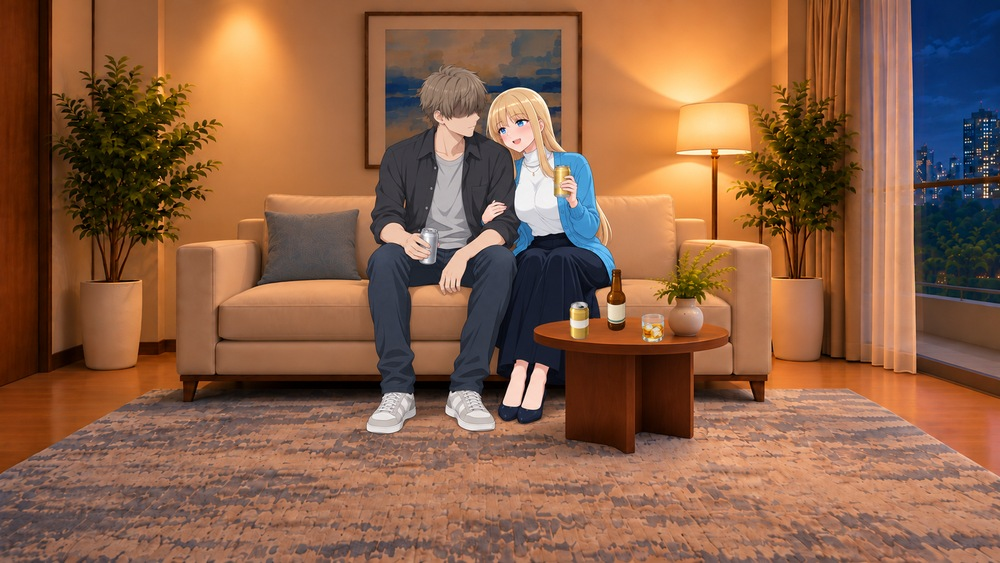
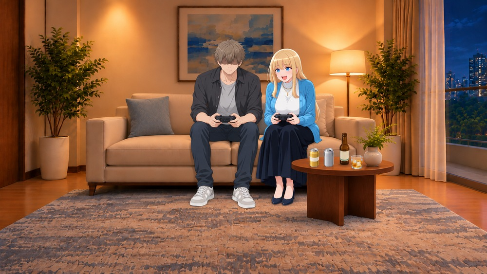
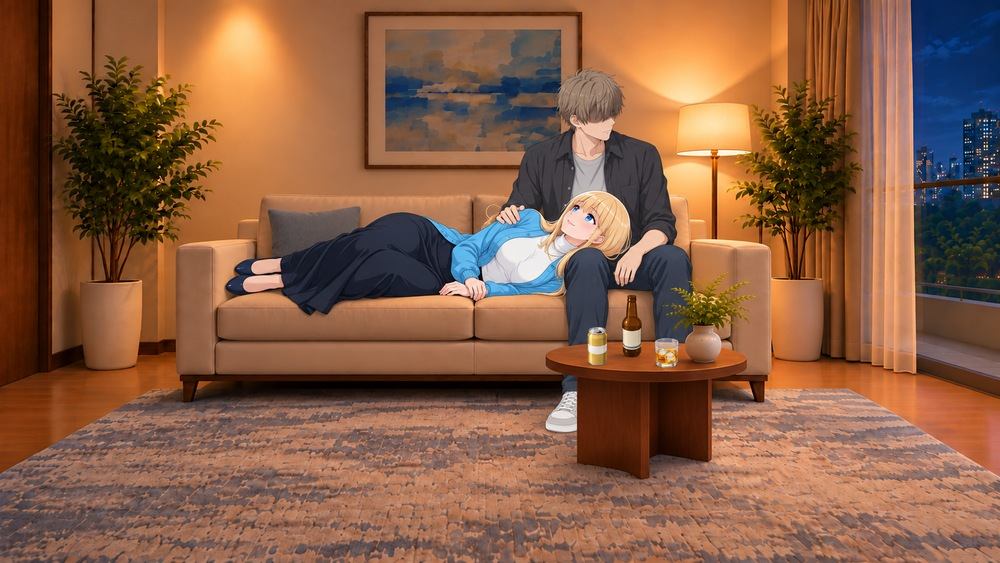

正面ソファーの宅飲み：Aの進行とBの分岐
用意された最新の正面ソファー背景（右座面前に机がある版）を使用。②は「絨毯に座る」と解釈。ヒロインはソファー右側から、酔って絨毯の会話へ移る流れです。Bの接近・ゲーム・膝枕は、相手との関係に応じた別ルートの画像案。数値・分岐はまだゲームに実装していません。
A：お行儀よく飲む → 絨毯へ
A1｜基本・酔い低め
ソファー右側で、お行儀よく飲む

まだ一杯目だから。ゆっくりでいいでしょ。
新規のソファー座り人物とモブ3人・お酒3種を配置。背景の手前の机を元画素から重ね、右側の脚を隠した。
場面PNGA2｜酔い中程度・会話が盛り上がる
酔って絨毯へ。会話の輪が近づく

そっちばかり喋らないで、私にも教えてよ。
既存の酔い4.pngを再利用。男子を左右へ大きく配置し、机と絨毯に缶・瓶・グラス。男が触れる新規動作は含めていない。
場面PNGB：距離が近づいた場合の3案
酔い度と、相手への親密さ・安心感・その場の反応は別に扱う構想。Bのヒロインは起きて会話や遊びを楽しむ場面です。
B1｜相手との親密さが高い・近づく反応を選ぶ
ソファーで肩を寄せて飲む

……このくらい、別にいいけど。
接触位置を合わせた背景込み生成。人物単独レイヤーの単純合成ではなく、元背景の細部には差がある。
場面PNGB2｜遊びへの興味が高い・相手と気が合う
隣同士でゲームを始める

今のは私のせいじゃないって！ もう一回！
二人が各自のコントローラーを両手で持つ案。飲み物は机へ置く。テーブル位置は元背景から動いている。
場面PNGB3｜安心感・親密さが高い・双方が望む
ソファーで膝枕

ちょっとだけ。このまま話してて。
ヒロインが男性の膝に頭を乗せる向き。目を開けてくつろぐ場面。元の人物PNGとは姿勢・髪の見え方が異なる。
場面PNG別素材として使える人物・モブ・お酒
男性は前髪・影で目元を隠し、服の彩度を落とした成人大学生風。モブBは最初に出た笑みを口元の影で修正。手持ちの缶・グラスは各モブにも含まれます。お酒の独立素材は机や床へ配置しています。
既存の絨毯飲みヒロイン（原寸コピー） ／ 使った無人背景